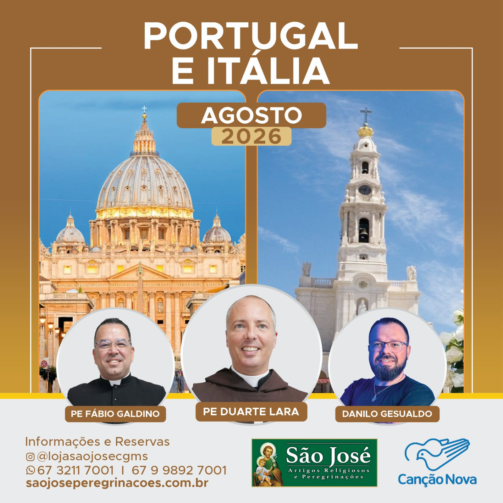

Uma peregrinação de 15 dias pelos grandes santuários de Portugal e Itália, unindo dois dos destinos de fé mais importantes do mundo católico.
Em Portugal: Fátima (Santuário de Nossa Senhora, Capelinha das Aparições, Basilica Nossa Senhora do Rosário), Lisboa (Mosteiro dos Jerônimos, Sé Catedral, Santuário de Cristo Rei) e os locais históricos da fé portuguesa.
Na Itália: Roma (Vaticano, Basílica de São Pedro, Catacumbas), Assis (São Francisco e Santa Clara), Loreto (Santa Casa), Pádua (Santo Antônio) e mais. Sob a direção espiritual de Padre Fábio Galdino, Padre Duarte Lara e Danilo Gesualdo.
Embarque no aeroporto de Campo Grande ou sua capital com conexão em Guarulhos (GRU). Voo internacional com destino a Lisboa. A partir de Guarulhos, todos os voos e roteiro em grupo.
Chegada ao Aeroporto de Lisboa. Recepção e traslado ao hotel. Visita panorâmica a Lisboa: Mosteiro dos Jerônimos (Patrimônio da Humanidade), Torre de Belém, Padrão dos Descobrimentos. Sé Catedral de Lisboa. Igreja de São Vicente de Fora. Jantar e acomodação.
Visita à encantadora cidade medieval de Óbidos. Parada em Nazaré (cidade costeira). Chegada a Fátima. Visita à Capelinha das Aparições (local exato das aparições de Nossa Senhora em 1917). Basílica de Nossa Senhora do Rosário. Basílica da Santíssima Trindade. Participação na Procissão das Velas (se horário permitir). Acomodação e jantar em Fátima.
Dia inteiro dedicado a Fátima. Missa no Santuário. Visita ao Museu de Cera de Fátima (história das aparições). Casas dos Pastorinhos em Aljustrel (Lúcia, Francisco e Jacinta). Poço dos Pastorinhos. Capelinha de São João. Participação na Via Sacra do Santuário. Jantar e acomodação.
Visita ao Carmelo de Coimbra, onde Irmã Lúcia viveu seus últimos anos. Sé Velha de Coimbra. Visita panorâmica ao Porto: Catedral do Porto, Igreja do Carmo, Livraria Lello. Traslado ao aeroporto para voo a Roma. Acomodação e jantar em Roma.
Dia dedicado ao Vaticano. Praça de São Pedro. Basílica de São Pedro (possibilidade de Missa). Museus do Vaticano e Capela Sistina (afrescos de Michelangelo). Gruta do Vaticano (túmulos papais). Jantar e acomodação.
Visita às basílicas patriarcais: São João de Latrão (Mãe e Cabeça de todas as Igrejas), Santa Maria Maior (ícone de Nossa Senhora Salus Populi Romani), São Paulo Fora dos Muros (possibilidade de Missa). Visita às Catacumbas de São Calisto. Jantar e acomodação.
Tour panorâmico: Coliseu, Foros Romanos, Fontana di Trevi, Praça Navona, Panteão. São Pedro in Vinculis (Moisés de Michelangelo). Santa Croce in Gerusalemme. Santa Maria Sopra Minerva (corpo de Santa Catarina de Sena). Jantar e acomodação.
Visita ao Santuário da Santa Casa de Loreto, onde segundo a tradição foi transportada a casa onde a Virgem Maria recebeu o Anjo. Possibilidade de Missa. Continuação para Lanciano, local do Primeiro Milagre Eucarístico (século VIII). Veneração das relíquias. Jantar e acomodação.
Visita a San Giovanni Rotondo: Túmulo de São Padre Pio e nova Basílica (possibilidade de Missa). Subida ao Monte Sant'Angelo: Santuário de São Miguel Arcanjo, um dos mais antigos santuários cristãos do Ocidente. Jantar e acomodação.
Viagem para Assis. Visita à Basílica de São Francisco (possibilidade de Missa). Basílica de Santa Clara. Santuário da Espoliação com o corpo do Beato Carlo Acutis. Tarde: visita à Basílica Santa Maria dos Anjos com a Porciúncula. Jantar e acomodação.
Visita a Cássia, cidade de Santa Rita. Veneração ao corpo da Santa. Continuação para Florença: Catedral de Santa Maria della Fiore, Batistério com a Porta do Paraíso, Santa Maria Novella. Jantar e acomodação.
Dia da Solenidade da Assunção de Nossa Senhora. Visita a Pádua: Basílica de Santo Antônio (Missa da Solenidade, se possível). Veneração das relíquias do Santo: língua, queixo e braço direito. Oratório de São Jorge. Capelinha dos Scrovegni (afrescos de Giotto). Jantar e acomodação.
Manhã: passeio a Veneza. Vaporetto pela Ilha de Veneza. Praça de São Marcos e Basílica de São Marcos. Igreja de Santa Luzia. Tarde: traslado ao aeroporto para voo de retorno ao Brasil.
Chegada em Guarulhos/SP e conexão para a cidade de origem. Fim dos serviços.
Fotos serão disponibilizadas em breve.
Vagas limitadas. Entre em contato para confirmar disponibilidade.
Solicitar informações pelo WhatsApp Formulário de ContatoNão realizamos pagamentos online.
Atendimento personalizado garantido.